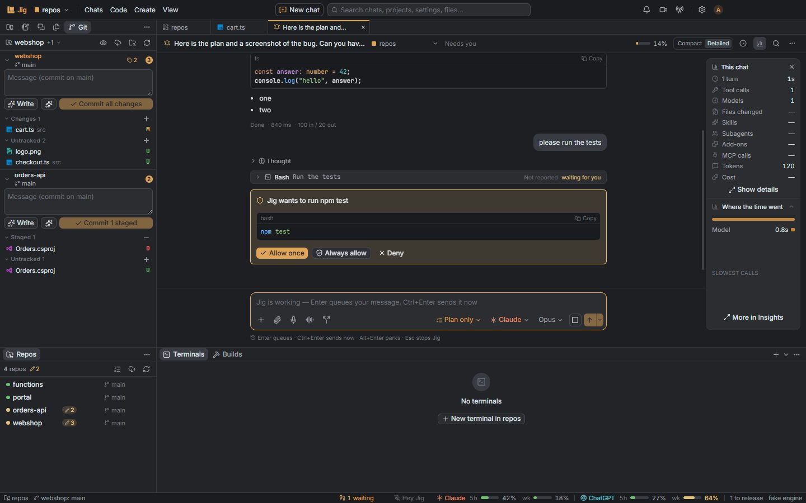
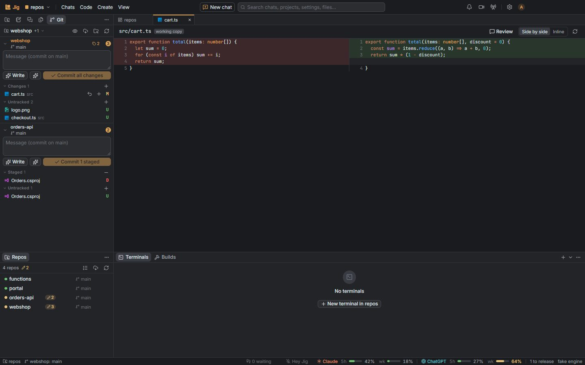
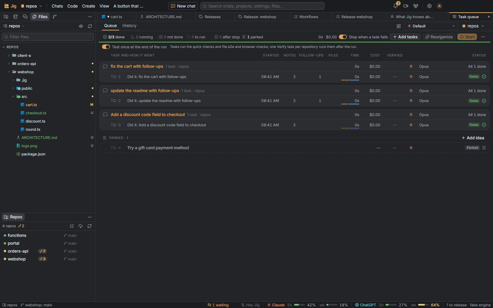
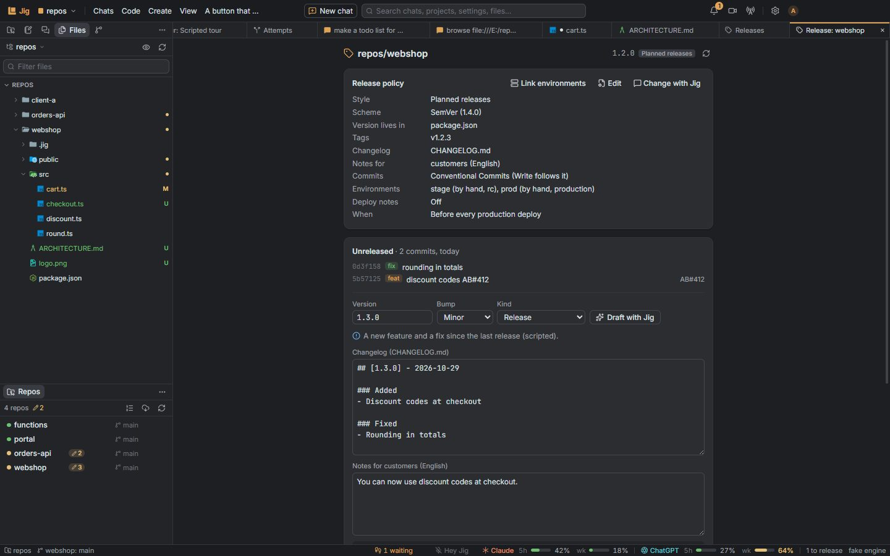

Jig 0.27 · for Windows
The workbench that builds its own tools.
Chats, all your repositories, git, terminals and scripts in one window. Ask for a tool you're missing, and Jig makes it.
A workbench around the agent, not a new one.
Jig adds what's around the chat: your repositories, the work that runs without you, and the tools you ask for. These are Jig's own screens.
- 01
Chat with the real Claude Code
Your CLAUDE.md files, skills, MCP servers and plugins. With a ChatGPT plan, a chat can run on Codex instead.

- 02
Every repository in one window
Git, files, an editor, terminals, scripts, tests, pipelines and boards for every repository in your projects.

- 03
Work that runs without you
A task queue, workflows and parallel attempts in git worktrees, with a check at the end.

- 04
Ship from where you work
Releases knows each repository's policy: version, notes, tag and publish, in one place.

New in 0.27: make things that move.
One bundled three.js for every making tool, and a chart kit that never guesses a coordinate. The film above and the chart below were made with them.
- Motion
- Films with real 3D scenes and generative canvases, rendered on your computer.
- Pages
- Live 3D on a page, with a still underneath until you turn scripts on.
- Numbers
- Bar, column, line, area, donut and stat charts from your figures, in your page's colours.
- Studio
- Stills from a 3D scene, and tall stills that come out whole.
- Posters, flyers and cards, laid out for paper.
Drawn with Numbers from this repository's git log.
Your subscription. Your credentials.
Jig drives the official command-line tools; it doesn't replace them or sit between you and them.
Never reads your login
Sign-in is Claude Code's and Codex's own flow, in a private terminal.
Stays on your computer
Everything Jig keeps lives in ~/.jig.
Your own tools
git, gh and az with their own credentials, never copied.
Tools you review
What the builder makes is an add-on you look at before it's kept.
Made the way it says.
Counted from this repository on the day of 0.27.